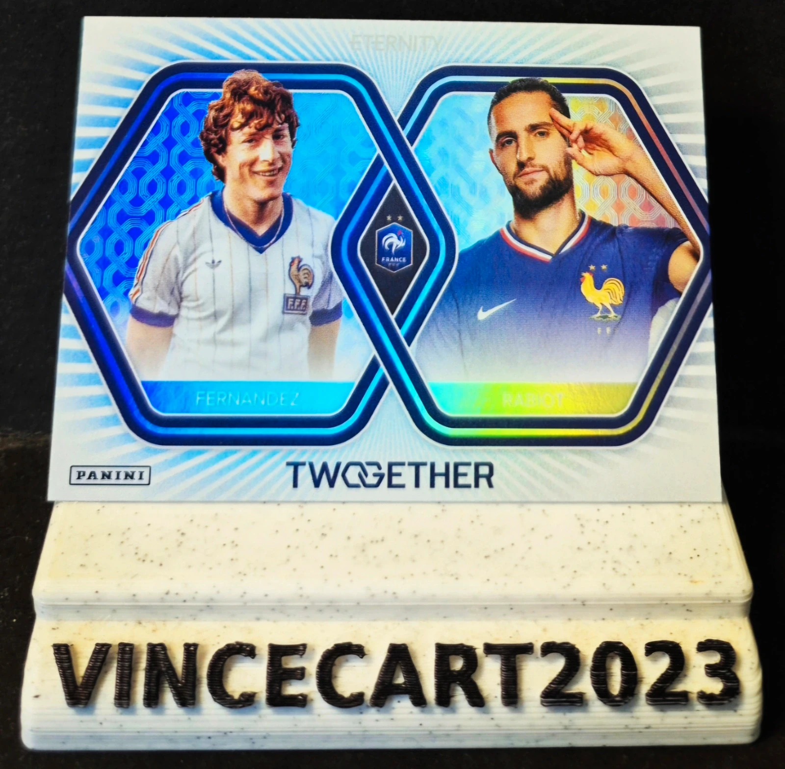

Fernandez / Rabiot – Together – Panini Eternity FFF TWO-07
2,00 €
Superbe carte Together de la collection Panini Eternity Équipe de France, mettant en parallèle deux milieux de terrain emblématiques des Bleus : Luis Fernandez et Adrien Rabiot. 📌 Joueurs : Luis Fernandez & Adrien Rabiot 📌 Équipe : France 🇫🇷 📌 Collection : Panini Eternity 📌 Série : Together 📌 Numéro : TWO-07 📌 État : Near Mint / Excellent état ✨ Carte holographique au design original comparant deux générations de l'Équipe de France. ✨ Un bel hommage à deux profils de milieu de terrain ayant marqué leur époque. ✨ Idéale pour les collectionneurs des Bleus, de Panini Eternity ou des cartes football premium. 📦 Carte soigneusement protégée pour l'expédition